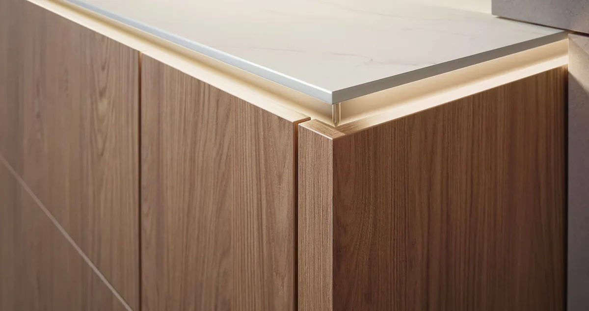
Detale i światło
Koncepcja Faceline: wysunięte fronty, uskoki głębokości i ukryte światło LED, nagrodzona German Design Award 2025.
ul. Legnicka 69, 59-300 Lubin
tel. 721 721 541
biuro@modern-studio.pl
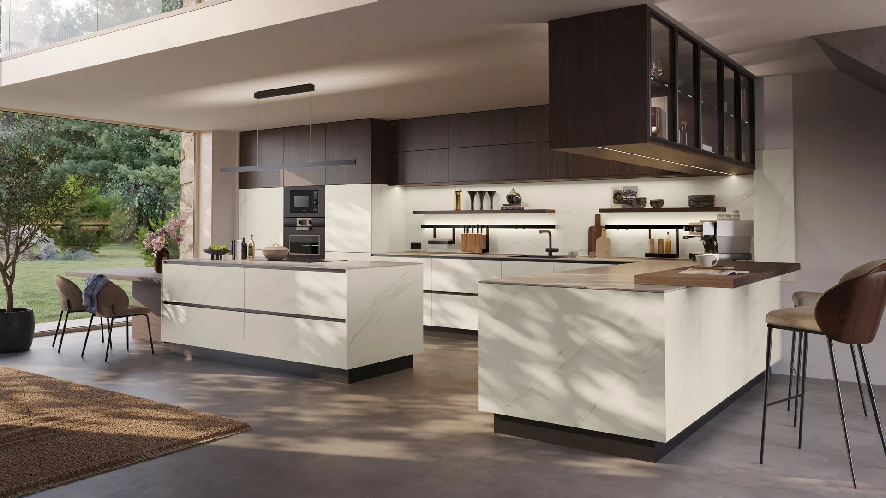
Modern Studio Wnętrz, kuchnie Sachsenküchen, Lubin
Kuchnie Sachsenküchen powstają na zamówienie w Saksonii, każda jako pojedynczy egzemplarz. Projekt, pomiar i montaż robimy na miejscu, w Lubinie.
Umów projekt kuchniKażdą kuchnię składa się z frontów, dekorów i uchwytów dobranych do wnętrza. Poniżej zestawienia z aktualnych kolekcji producenta: nazwy to modele frontów użyte w danej kuchni.
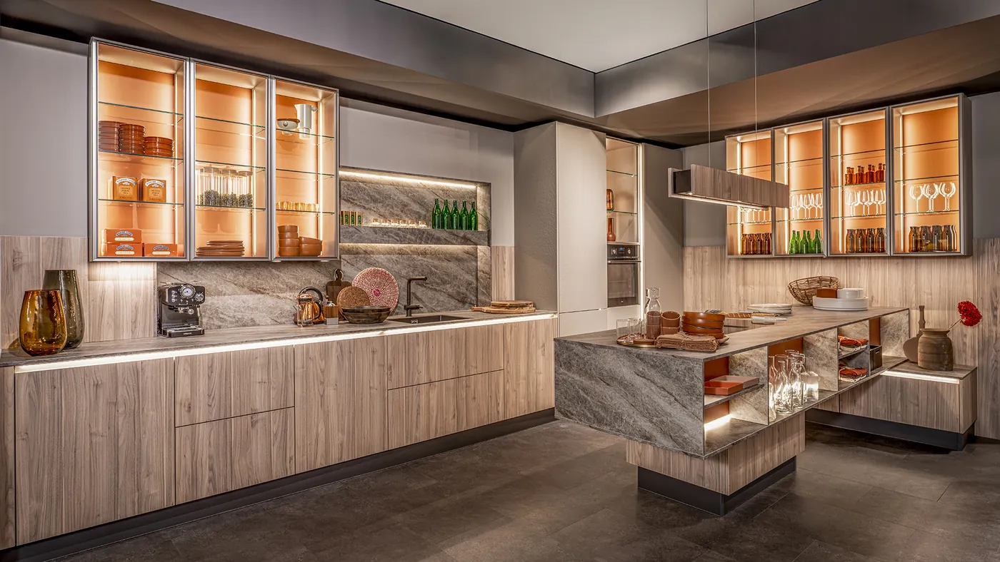
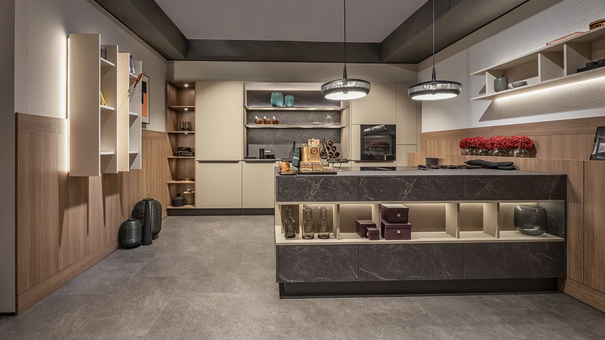
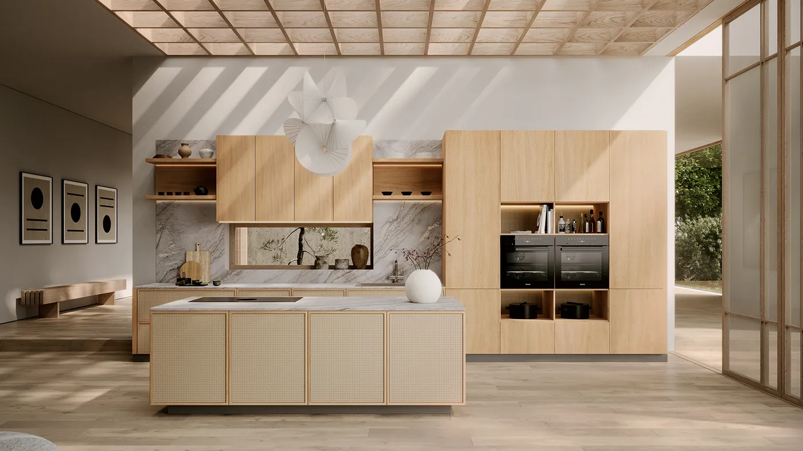
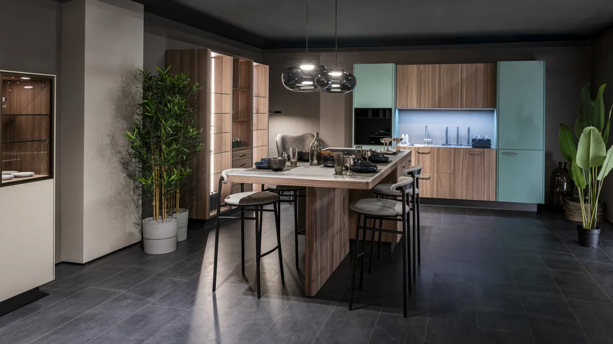
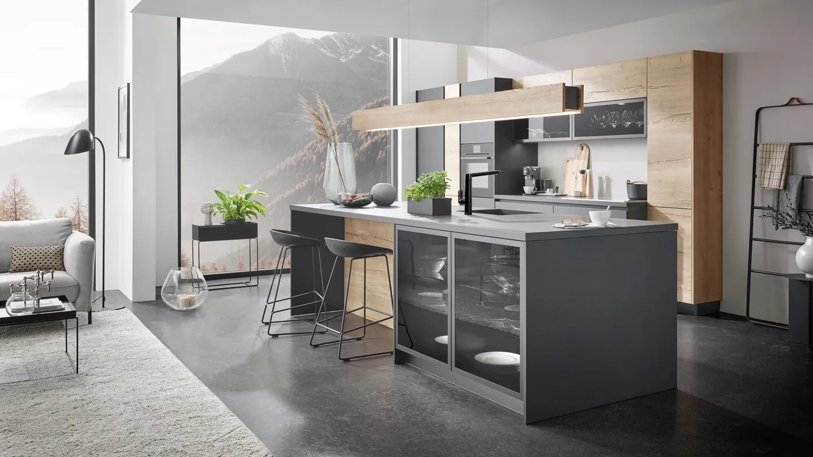
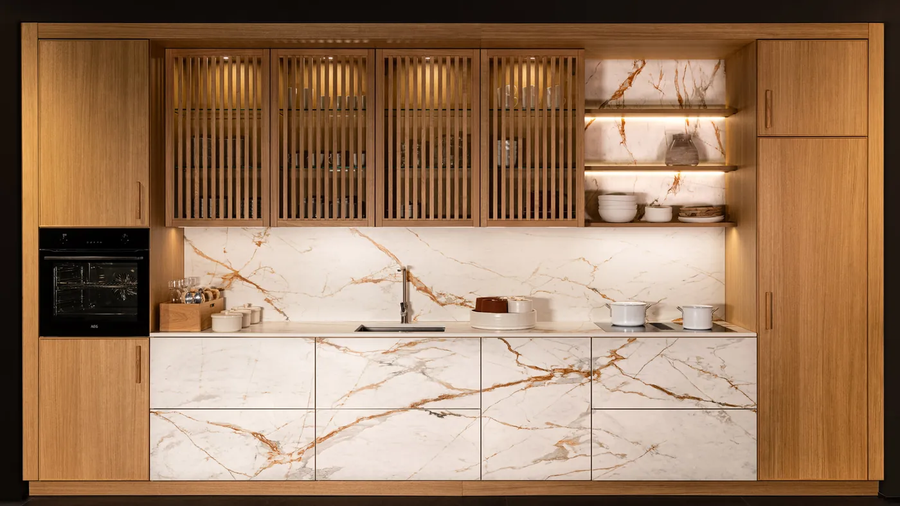
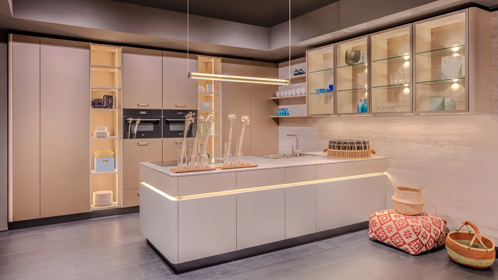
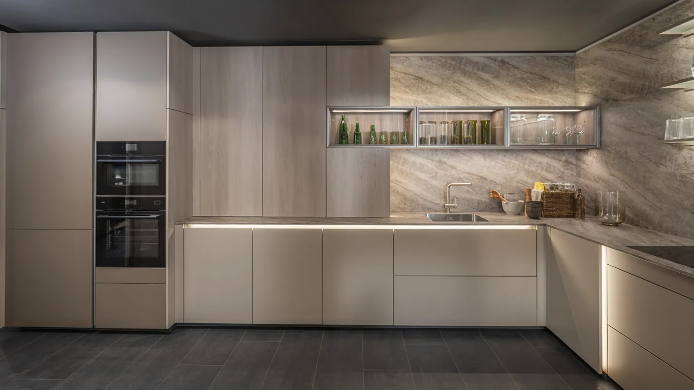
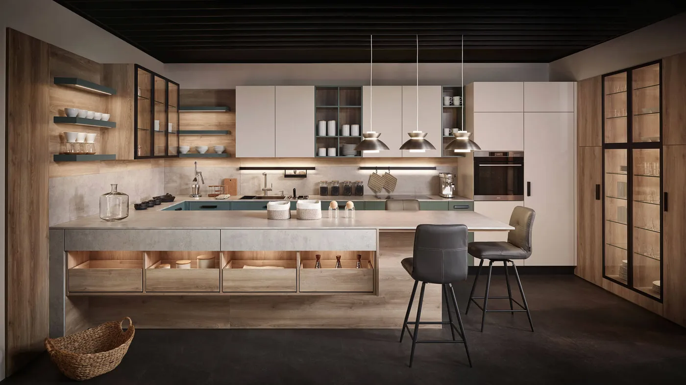
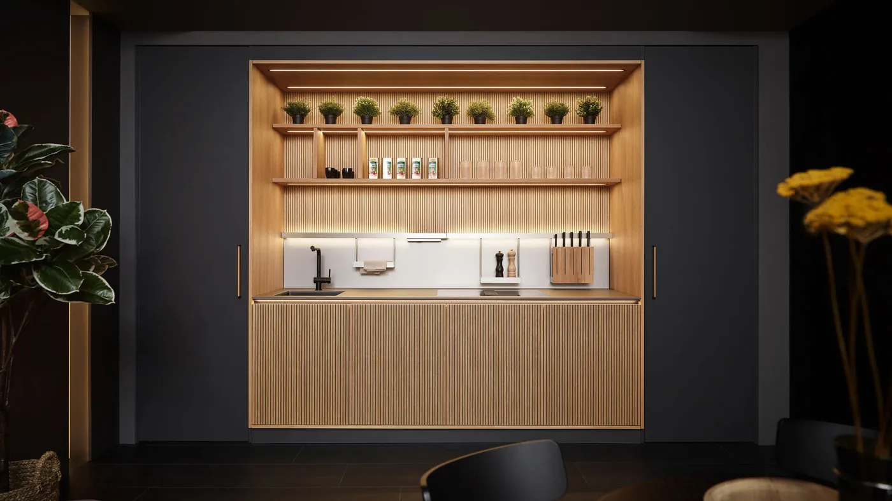
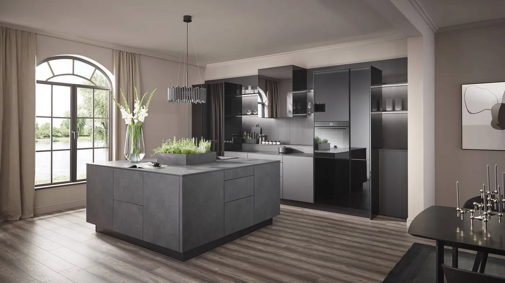
1 / 11 Przesuń palcem lub przeciągnij myszą
Producent ma w ofercie 182 dekory frontów, 44 dekory korpusów, ponad 3000 kolorów lakieru i 117 uchwytów oraz gałek. Ta sama technika sprawdza się też w garderobie, łazience, pomieszczeniu gospodarczym i salonie.
Kuchnia z Saksonii jest tak dobra, jak jej projekt i montaż. Dlatego cały proces prowadzimy w jednym miejscu: od pierwszego szkicu w salonie przy Legnickiej, przez pomiar u Ciebie, po ostatnią regulację frontów.
Fabryka produkuje każdą kuchnię dopiero po zamówieniu, dokładnie według naszego projektu.
To, co wyróżnia kuchnię, wychodzi w codziennym używaniu: przemyślane schowki, precyzyjne mechanizmy i rozwiązania, które po prostu działają.

Koncepcja Faceline: wysunięte fronty, uskoki głębokości i ukryte światło LED, nagrodzona German Design Award 2025.
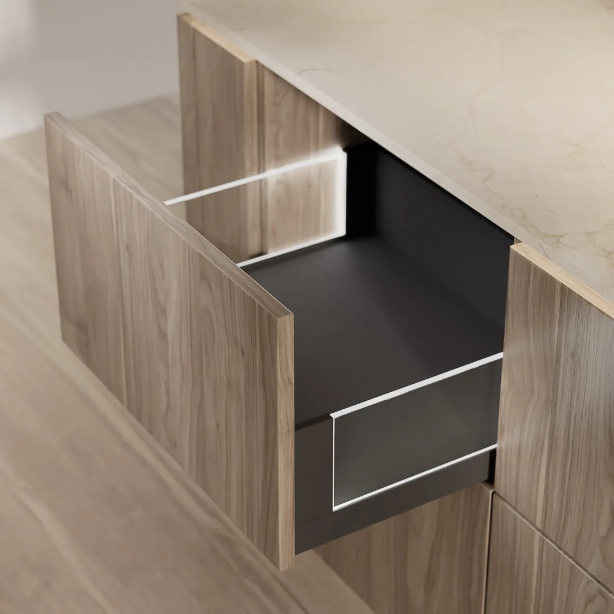
Systemy porządku, które można rozbudowywać modułami i dopasować do sposobu gotowania.
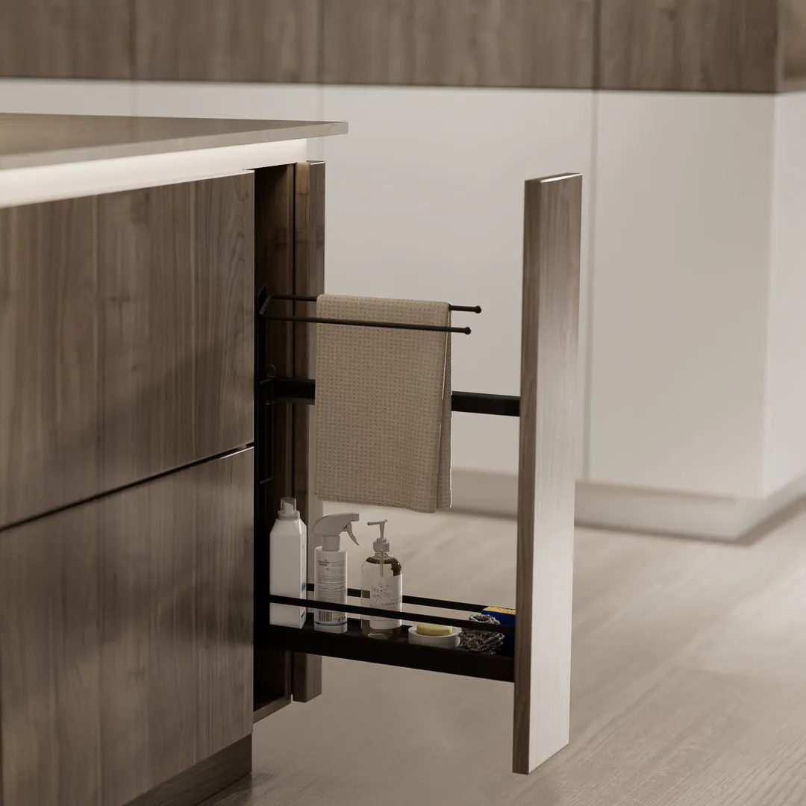
Ciche, niezawodne i intuicyjne mechanizmy oraz okucia najwyższej klasy.
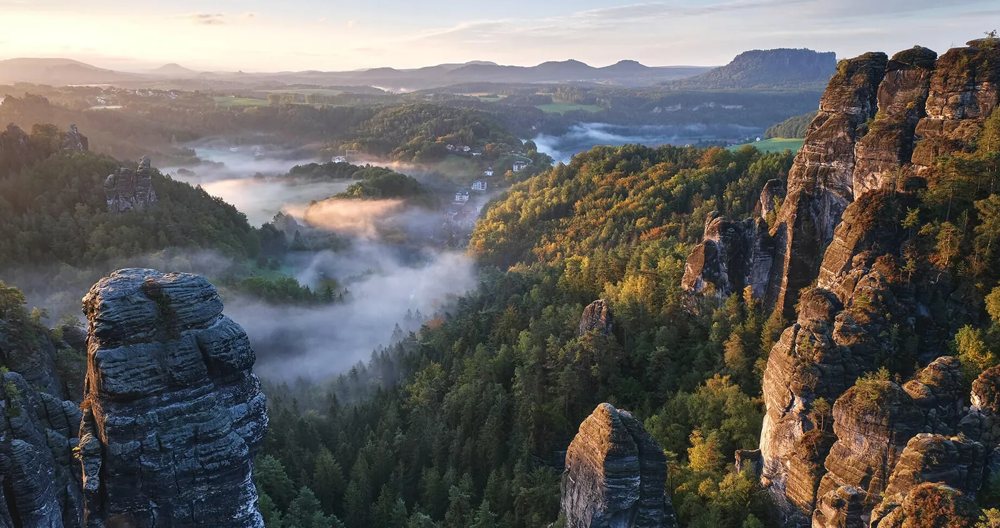
Made in Germany, w Saksonii, w zakładzie w Rudawach koło Drezna. Meble powstają tam od 1908 roku, a kuchnie pod nazwą Sachsenküchen od 1920 roku.
Przyjdź z rzutem mieszkania albo kilkoma wymiarami. Porozmawiamy o układzie, frontach i blatach, a potem przygotujemy projekt kuchni w 3D.
Napisz kilka słów o pomieszczeniu i terminie. Oddzwonimy i umówimy spotkanie w salonie albo pomiar.